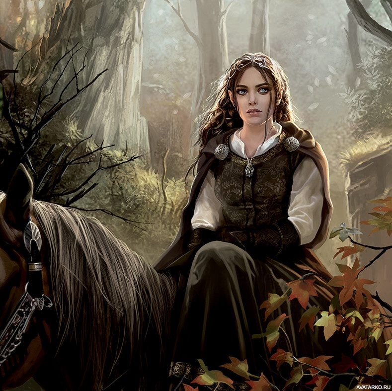
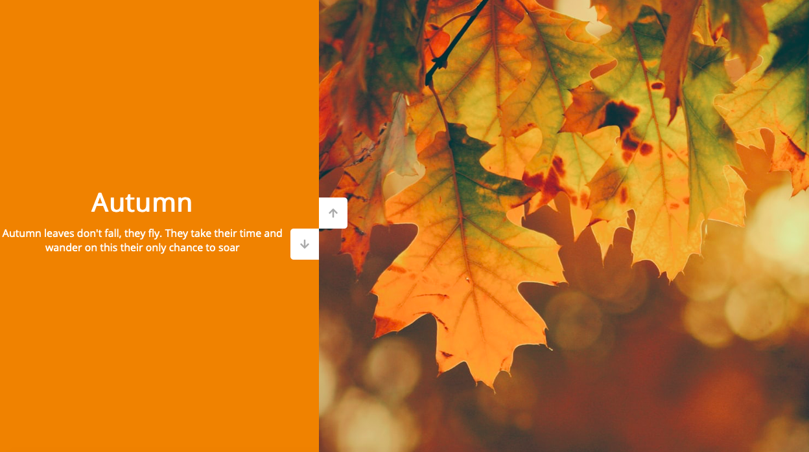

Skills
- HTML
- CSS
- JavaScript
- Git
Contacts
- +375292147127
- lu_gu@mail.ru
Some words about me
Doctor. 31 years.
This is a new possibilities for me. I do not have work experience.
I'm learning fast and having knowledge from an alternative field.
I guarantee a non-standard view of the solution
My projects

Looped vertical slider in JavaScript when after the last slide the first one goes next, and when flipping in the opposite direction, after the first slide the last one goes the next one. Implemented scrolling the slider with the mouse wheel
Use HTML, CSS, JS
Education and courses
September 2021 - now JavaScript/Front-end. Rolling Scopes School
July-September 2021 JavaScript/Front-end. Stage 0. Rolling Scopes School
2007-2013 Belarusian State Medical University
English
Graduated from English Streamline Pre-Intermediate courses
Epam English test result A2